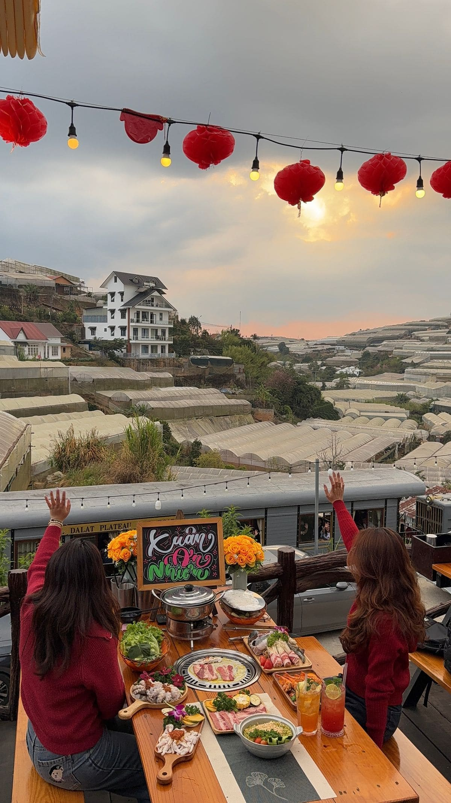
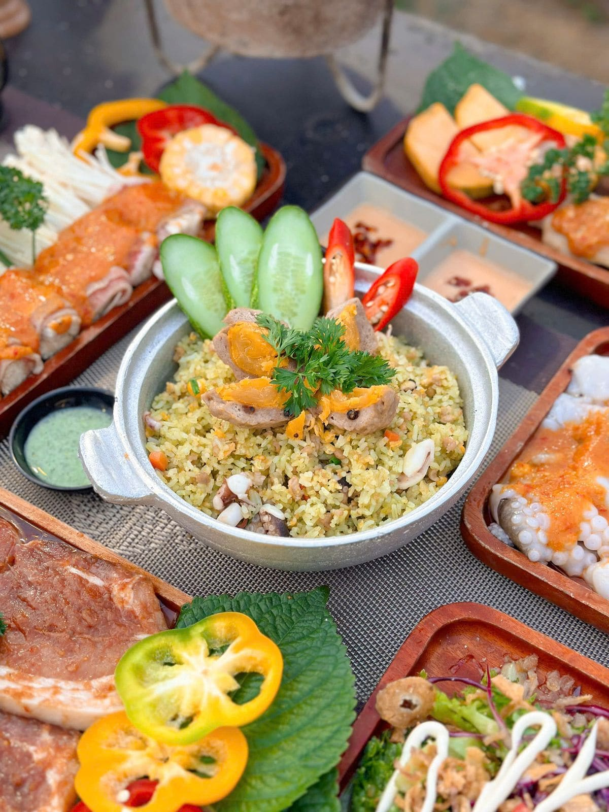

Cá Đà Lạt — Đặc sản nước lạnh
Ít ai biết Đà Lạt là vùng nuôi cá tầm và cá hồi lớn nhất miền Nam Việt Nam! Nhờ nguồn nước lạnh 15-20°C từ hồ Tuyền Lâm và các suối vùng cao, cá tầm, cá hồi Đà Lạt thịt chắc, ngọt, tươi — nướng than hoa cực ngon.
Các món cá nướng phải thử
Cá tầm nướng giấy bạc: Cá nguyên con, gói giấy bạc với sả, hành, ớt — nướng than hoa 20 phút. Mở ra thơm phức, thịt trắng mềm.
Cá hồi nướng muối ớt: Phi lê cá hồi nướng da giòn, thịt hồng cam. Chấm muối ớt xanh — ngon xuất sắc!

Cá hồi nướng sốt teriyaki: Kiểu Nhật, ngọt mặn hài hòa.
Cá tầm nướng than hoa: Nướng trực tiếp, da cá giòn rụm, thịt ngọt tự nhiên.

Cá nướng tại Trạm Dừng Chill
Tại Trạm Dừng Chill, menu có cá tầm nướng và cá hồi nướng từ nguồn cung cấp tại Đà Lạt — đảm bảo tươi. Cá nướng giấy bạc + view hoàng hôn = bữa tối sang trọng mà giá bình dân. Giá từ 120-250K/đĩa. Đặt bàn thử cá nướng →
Cách chọn cá nướng tươi
Cá tươi: mắt trong, mang đỏ, thịt đàn hồi khi ấn. Hỏi quán xem cá nhập ngày nào. Quán uy tín thường có bể cá sống — chọn cá, nướng tại chỗ là chuẩn nhất!
Kết luận
Nướng cá Đà Lạt — cá tầm, cá hồi nước lạnh — là đặc sản không thể bỏ qua! Ghé Trạm Dừng Chill thưởng thức ngay. Đặt bàn →